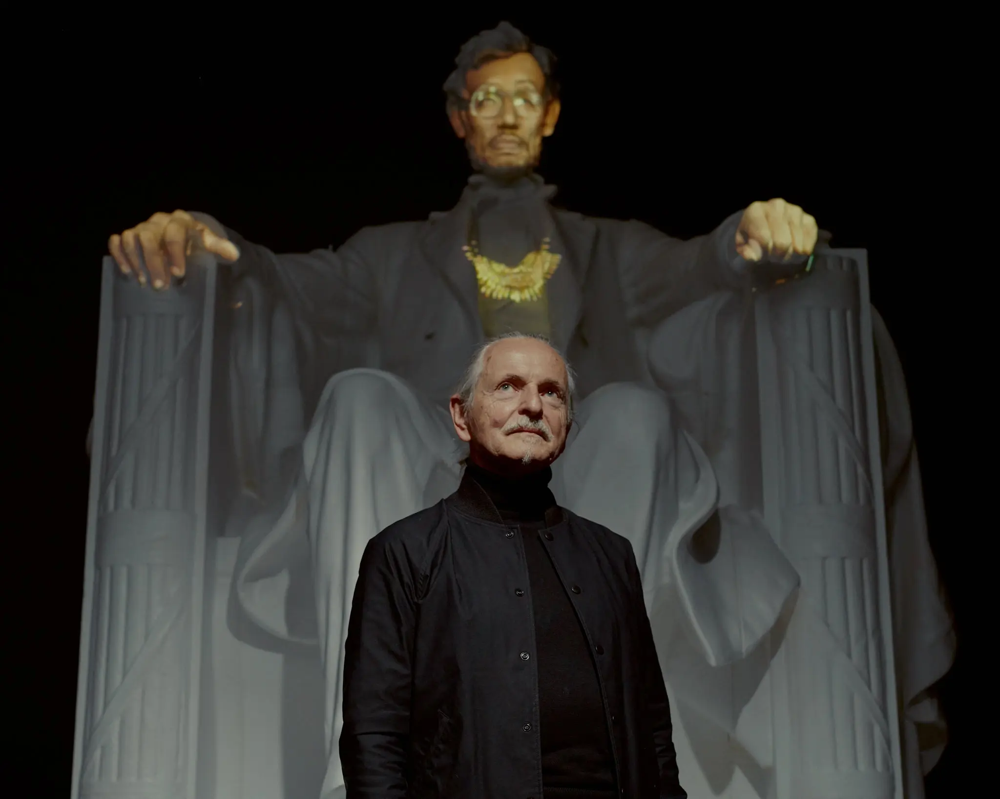

Il est surtout reconnu pour ses projections extérieures à grande échelle, il en a réalisé plus d'une quarantaine, présentées dans plus d'une douzaine de pays.

Krzysztof Wodiczcko
Artiste et designer américano-polonais
" Nous devons aider [les monuments] à être utiles aux vivants, en les rendant pertinents pour nous afin que nous puissions construire un avenir, un avenir meilleur."